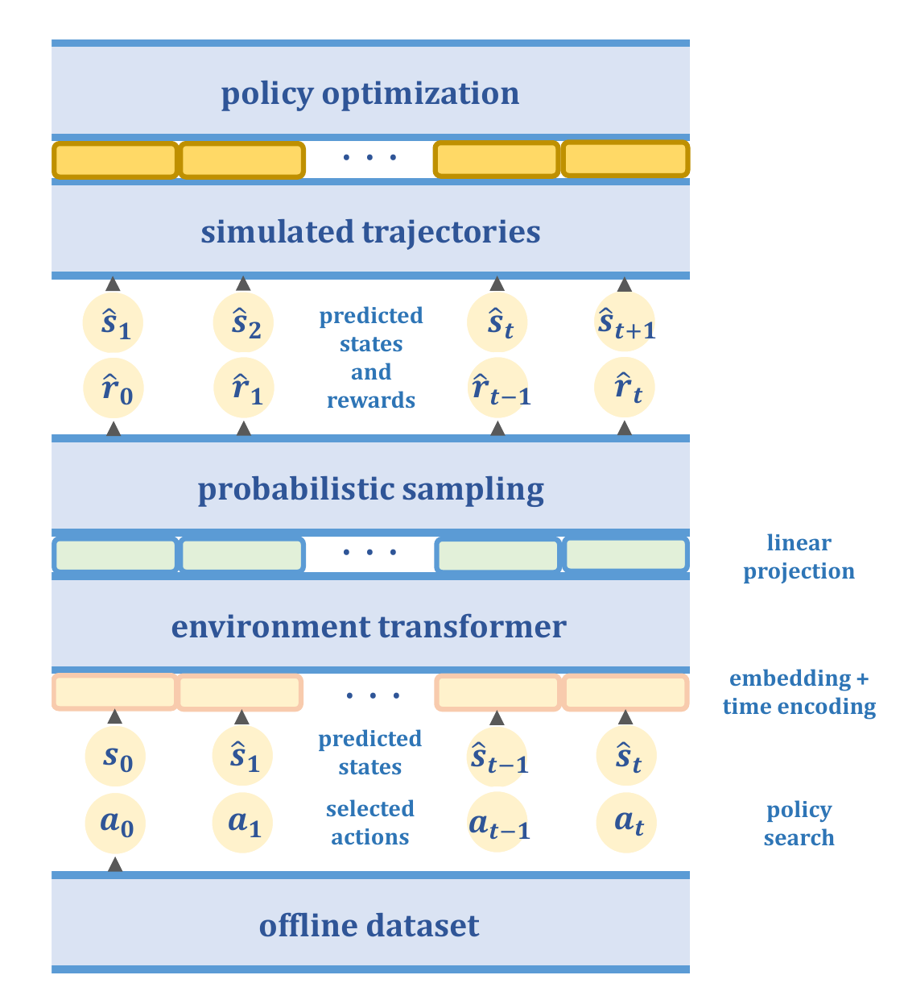
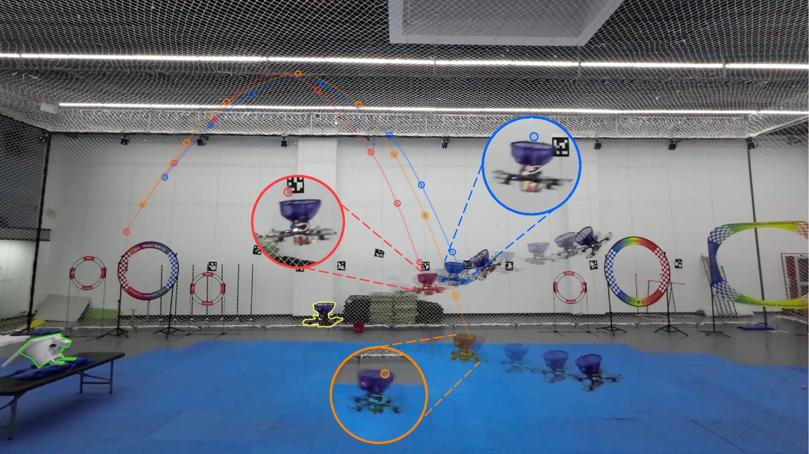

|
Pengqin Wang
I am a Ph.D. student in Robotics and Autonomous Systems(ROAS)
at HKUST and HKUST(GZ),
under the supervision of Prof. Shaojie Shen and Prof. Meixin Zhu.
My research interest is reinforcement learning and decision making.
I received my B.Eng. degree in Electronic Information Engineering from Shandong University in 2021.
During my undergraduate study, I studied at Chongxin College and worked with Prof. Bin Zhou
on autonomous navigation of ground robots.
[pwangas [at] connect (dot) ust (dot) hk] [google scholar]
|
|

|
ENTROPY: Environment Transformer and Offline Policy Optimization
Pengqin Wang, Meixin Zhu, Shaojie Shen
Model-based methods provide an effective approach to offline reinforcement learning (RL).
They learn an environmental dynamics model from interaction experiences and then perform policy optimization based on the learned model.
However, previous model-based offline RL methods lack long-term prediction capability, resulting in large errors when generating multi-step trajectories.
We address this issue by developing a sequence modeling architecture, Environment Transformer, which can generate reliable long-horizon trajectories based on offline datasets.
We then propose a novel model-based offline RL algorithm, ENTROPY, that learns the dynamics model and reward function by ENvironment TRansformer and performs Offline PolicY optimization. We evaluate the proposed method on MuJoCo continuous control RL environments.
Results show that ENTROPY performs comparably or better than the state-of-the-art model-based and model-free offline RL methods and demonstrates more powerful long-term trajectory prediction capability compared to existing model-based offline methods.
#Model_Based_RL #Offline_RL #Sequence_Modeling
[Paper]
|
|

|
Catch Planner: Catching High-Speed Targets in the Flight
Huan Yu, Pengqin Wang, Jin Wang, Jialin Ji, Zhi Zheng, Jie Tu, Guodong Lu, Jun Meng, Meixin Zhu, Shaojie Shen, Fei Gao
Catching high-speed targets in the flight is a complex and typical highly dynamic task. In this paper, we propose Catch Planner, a planning-with-decision scheme for catching.
For sequential decision making, we propose a policy search method based on deep reinforcement learning.
In order to make catching adaptive and flexible, we propose a trajectory optimization method to jointly optimize the highly coupled catching time and terminal state while considering the dynamic feasibility and safety.
We also propose a flexible constraint transcription method to catch targets at any reasonable attitude and terminal position bias.
The proposed Catch Planner provides a new paradigm for the combination of learning and planning and is integrated on the quadrotor designed by ourselves, which runs at 100hz on the onboard computer.
Extensive experiments are carried out in real and simulated scenes to verify the robustness of the proposed method and its expansibility when facing a variety of high-speed flying targets.
#Motion_Planning #Decision_Making #Spatio_Temporal_Trajectory_Optimization #Deep_Reinforcement_Learning #Catching
[Paper]
|
|